에너지관리기사 (2020-06-06 기출문제)
1과목: 연소공학
1. 다음과 같은 질량조성을 가진 석탄의 완전연소에 필요한 이론공기량(kg/kg)은 얼마인가?
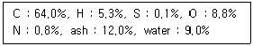
- 7.5
- 8.8
- 9.7
- 10.4
(정답률: 58%)
2. 링겔만 농도표의 측정 대상은?
- 배출가스 중 매연 농도
- 배출가스 중 CO 농도
- 배출가스 중 CO2 농도
- 화염의 투명도
(정답률: 74%)

3. 다음 중 연소 시 발생하는 질소산화물(NOx)의 감소 방안으로 틀린 것은?
- 질소 성분이 적은 연료를 사용한다.
- 화염의 온도를 높게 연소한다.
- 화실을 크게 한다.
- 배기가스 순환을 원활하게 한다.
(정답률: 69%)
4. 연료의 일반적인 연소 반응의 종류로 틀린 것은?
- 유동층연소
- 증발연소
- 표면연소
- 분해연소
(정답률: 73%)
5. 공기와 혼합 시 가연범위(폭발범위)가 가장 넓은 것은?
- 메탄
- 프로판
- 메틸알코올
- 아세틸렌
(정답률: 66%)
6. 11g의 프로판이 완전연소 시 생성되는 물의 질량(g)은?
- 44
- 34
- 28
- 18
(정답률: 50%)
7. 다음 중 역화의 위험성이 가장 큰 연소방식으로서, 설비의 시동 및 정지 시에 폭발 및 화재에 대비한 안전 확보에 각별한 주의를 요하는 방식은?
- 예혼합 연소
- 미분탄 연소
- 분무식 연소
- 확산 연소
(정답률: 69%)
8. 액체연료에 대한 가장 적합한 연소방법은?
- 화격자 연소
- 스토커 연소
- 버너 연소
- 확산 연소
(정답률: 74%)
9. 연료의 발열량에 대한 설명으로 틀린 것은?
- 기체 연료는 그 성분으로부터 발열량을 계산할 수 있다.
- 발열량의 단위는 고체와 액체 연료의 경우 단위중량당(통상 연료 kg당) 발열량으로 표시한다.
- 고위발열량은 연료의 측정열량에 수증기 증발잠열을 포함한 연소열량이다.
- 일반적으로 액체 연료는 비중이 크면 체적당 발열량은 감소하고, 중량당 발열량은 증가한다.
(정답률: 74%)
10. 고체연료의 연료비(fuel ratio)를 옳게 나타낸 것은?
- 고정탄소(%) / 휘발분(%)
- 휘발분(%) / 고정탄소(%)
- 고정탄소(%) / 수분(%)
- 수분(%) / 고정탄소(%)
(정답률: 78%)
11. 고체연료의 연소방식으로 옳은 것은?
- 포트식 연소
- 화격자 연소
- 심지식 연소
- 증발식 연소
(정답률: 72%)
12. 고체연료의 연소가스 관계식으로 옳은 것은? (단, G : 연소가스량, Go : 이론연소가스량, A : 실제공기량, Ao : 이론공기량, a : 연소생성 수증기량)
- Go = Ao + 1 - a
- Go = Go - A + Ao
- G = Go + A - Ao
- Go = Ao - 1 + a
(정답률: 61%)
13. 백 필터(bag-filter)에 대한 설명으로 틀린 것은?
- 여과면의 가스 유속은 미세한 더스트 일수록 적게 한다.
- 더스트 부하가 클수록 집진율은 커진다.
- 여포재에 더스트 일차부착층이 형성되면 집진율은 낮아진다.
- 백의 밑에서 가스백 내부로 송입하여 집진한다.
(정답률: 60%)
14. 유압분무식 버너의 특징에 대한 설명으로 틀린 것은?
- 유량 조절 범위가 좁다.
- 연소의 제어범위가 넓다.
- 무화매체인 증기나 공기가 필요하지 않다.
- 보일러 가동 중 버너교환이 가능하다.
(정답률: 54%)
15. 다음 중 배기가스와 접촉되는 보일러 전열면으로 증기나 압축공기를 직접 분사시켜서 보일러에 회분, 그을음 등 열전달을 막는 퇴적물을 청소하고 쌓이지 않도록 유지하는 설비는?
- 수트블로워
- 압입통풍 시스템
- 흡입통풍 시스템
- 평형통풍 시스템
(정답률: 70%)
16. 관성력 집진장치의 집진율을 높이는 방법이 아닌 것은?
- 방해판이 많을수록 집진효율이 우수하다.
- 충돌 직전 처리가스 속도가 느릴수록 좋다.
- 출구가스 속도가 느릴수록 미세한 입자가 제거된다.
- 기류의 방향 전환각도가 작고, 전환회수가 많을수록 집진효율이 증가한다.
(정답률: 54%)
17. 보일러 연소장치에 과잉공기 10%가 필요한 연료를 완전연소할 경우 실제 건연소 가스량(Nm3/kg)은 얼마인가? (단, 연료의 이론공기량 및 이론 건연소 가스량은 각각 10.5, 9.9(Nm3/kg)이다.)
- 12.03
- 11.84
- 10.95
- 9.98
(정답률: 42%)
18. 연소가스량 10Nm3/kg, 연소가스의 정압비열 1.34 kJ/Nm3·℃인 어떤 연료의 저위발열량이 27200 kJ/kg이었다면 이론 연소온도(℃)는? (단, 연소용 공기 및 연료 온도는 5℃이다.)
- 1000
- 1500
- 2000
- 2500
(정답률: 53%)
19. 표준 상태인 공기 중에서 완전 연소비로 아세틸렌이 함유되어 있을 때 이 혼합기체 1L당 발열량(kJ)은 얼마인가? (단, 아세틸렌의 발열량은 1308 kJ/mol이다.)
- 4.1
- 4.5
- 5.1
- 5.5
(정답률: 40%)
20. 연소장치의 연소효율(Ec)식이 아래와 같을 때 H2는 무엇을 의미하는가? (단, Hc : 연료의 발열량, H1 : 연재 중의 미연탄소의 의한 손실이다.)
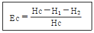
- 전열손실
- 현열손실
- 연료의 저발열량
- 불완전연소에 따른 손실
(정답률: 79%)
2과목: 열역학
21. 이상기체를 가역단열 팽창시킨 후의 온도는?
- 처음상태보다 낮게 된다.
- 처음상태보다 높게 된다.
- 변함이 없다.
- 높을 때도 있고 낮을 때도 있다.
(정답률: 48%)
22. 공기 100kg을 400℃에서 120℃로 냉각할 때 엔탈피(kJ) 변화는? (단, 일정 정압비열은 1.0kJ/kg·K 이다.)
- -24000
- -26000
- -28000
- -30000
(정답률: 65%)
23. 성능계수가 2.5인 증기 압축 냉동 사이클에서 냉동용량이 4kW 일 때 소요일은 몇 kW 인가?
- 1
- 1.6
- 4
- 10
(정답률: 64%)
24. 열역학 제2법칙을 설명한 것이 아닌 것은?
- 사이클로 작동하면서 하나의 열원으로부터 열을 받아서 이 열을 전부 일로 바꾸는 것은 불가능하다.
- 에너지는 한 형태에서 다른 형태로 바뀔뿐이다.
- 제2종 영구기관을 만든다는 것은 불가능하다.
- 주위에 아무런 변화를 남기지 않고 열을 저온의 열원으로부터 고온의 열원으로 전달하는 것은 불가능하다.
(정답률: 60%)
25. 다음 중 터빈에서 증기의 일부를 배출하여 급수를 가열하는 증기사이클은?
- 사바테 사이클
- 재생 사이클
- 재열 사이클
- 오토 사이클
(정답률: 55%)
26. 80℃의 물 50kg과 20℃의 물 100kg을 혼합하면 이 혼합된 물의 온도는 약 몇 ℃인가? (단, 물의 비열은 4.2kJ/kg·K이다.)
- 33
- 40
- 45
- 50
(정답률: 55%)
27. 랭킨사이클에서 각 지점의 엔탈피가 다음과 같을 때 사이클의 효율은 약 몇 % 인가?
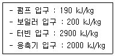
- 25
- 30
- 33
- 37
(정답률: 54%)
28. 냉동 사이클의 작동 유체인 냉매의 구비조건으로 틀린 것은?
- 화학적으로 안정될 것
- 임계 온도가 상온보다 충분히 높을 것
- 응축 압력이 가급적 높을 것
- 증발 잠열이 클 것
(정답률: 49%)
29. 압력 500 kPa, 온도 240℃인 과열증기와 압력 500kPa의 포화수가 정상상태로 흘러들어와 섞인 후 같은 압력의 포화증기 상태로 흘러나간다. 1kg의 과열증기에 대하여 필요한 포화수의 양은 약 몇 kg인가? (단, 과열증기의 엔탈피는 3063 kJ/kg이고, 포화수의 엔탈피는 636kJ/kg, 증발열은 2109kJ/kg 이다.)
- 0.15
- 0.45
- 1.12
- 1.45
(정답률: 24%)
30. 30℃에서 150L의 이상기체를 20L로 가역 단열압축 시킬 때 온도가 230℃로 상승하였다. 이 기체의 정적 비열은 약 몇 kJ/kg·K인가? (단, 기체상수는 0.287kJ/kg·K이다.)
- 0.17
- 0.24
- 1.14
- 1.47
(정답률: 45%)
31. 증기에 대한 설명 중 틀린 것은?
- 포화액 1kg을 정압 하에서 가열하여 포화증기로 만드는데 필요한 열량을 증발잠열이라 한다.
- 포화증기를 일정 체적 하에서 압력을 상승시키면 과열증기가 된다.
- 온도가 높아지면 내부에너지가 커진다.
- 압력이 높아지면 증발잠열이 커진다.
(정답률: 57%)
32. 최고 온도 500℃와 최저 온도 30℃사이에서 작동되는 열기관의 이론적 효율(%)은?
- 6
- 39
- 61
- 94
(정답률: 55%)
33. 비열이 α+βt+γt2로 주어질 때, 온도가 t1으로부터 t2까지 변화할 때의 평균 비열(Cm)의 식은? (단, α, β, γ는 상수이다.)
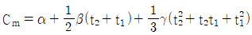
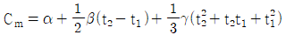
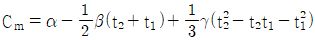
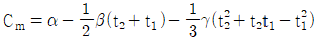
(정답률: 37%)
34. 다음은 열역학 기본법칙을 설명한 것이다. 0법칙, 1법칙, 2법칙, 3법칙 순으로 옳게 나열한 것은?
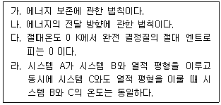
- 가 – 나 – 다 - 라
- 라 – 가 – 나 - 다
- 다 – 라 – 가 - 나
- 나 – 가 – 라 – 다
(정답률: 66%)
35. 그림은 물의 압력-체적 선도(P-V)를 나타낸다. A′ACBB′ 곡선은 상들 사이의 경계를 나타내며, T1, T2, T3는 물의 P-V 관계를 나타내는 등온곡선들이다. 이 그림에서 점 C는 무엇을 의미하는가?
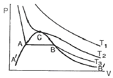
- 변곡점
- 극대점
- 삼중점
- 임계점
(정답률: 66%)
36. 어떤 상태에서 질량이 반으로 줄면 강도성질(intensive property) 상태량의 값은?
- 반으로 줄어든다.
- 2배로 증가한다.
- 4배로 증가한다.
- 변하지 않는다.
(정답률: 59%)
37. 카르노 냉동 사이클의 설명 중 틀린 것은?
- 성능계수가 가장 좋다.
- 실제적인 냉동 사이클이다.
- 카르노 열기관 사이클의 역이다.
- 냉동 사이클의 기준이 된다.
(정답률: 57%)
38. 비열비는 1.3이고 정압비열이 0.845kJ/kg·K인 기체의 기체상수(kJ/kg·K)는 얼마인가?
- 0.195
- 0.5
- 0.845
- 1.345
(정답률: 46%)
39. 오토사이클에서 열효율이 56.5%가 되려면 압축비는 얼마인가? (단, 비열비는 1.4이다.)
- 3
- 4
- 8
- 10
(정답률: 51%)
40. 유체가 담겨 있는 밀폐계가 어떤 과정을 거칠 때 그 에너지식은 △U12=Q12으로 표현된다. 이 밀폐계와 관련된 일은 팽창일 또는 압축일 뿐이라고 가정할 경우 이 계가 거쳐 간 과정에 해당하는 것은? (단, U는 내부에너지를, Q는 전달된 열량을 나타낸다.)
- 등온과정
- 정압과정
- 단열과정
- 정적과정
(정답률: 41%)
3과목: 계측방법
41. 피드백 제어에 대한 설명으로 틀린 것은?
- 고액의 설비비가 요구된다.
- 운영하는데 비교적 고도의 기술이 요구된다.
- 일부 고장이 있어도 전체 생산에 영향을 미치지 않는다.
- 수리가 비교적 어렵다.
(정답률: 72%)
42. 가스의 상자성을 이용하여 만든 세라믹식 가스분석계는?
- O2 가스계
- CO2 가스계
- SO2 가스계
- 가스크로마토그래피
(정답률: 64%)
43. 하겐-포아젤의 법칙을 이용한 점도계는?
- 세이볼트 점도계
- 낙구식 점도계
- 스토머 점도계
- 맥미첼 점도계
(정답률: 60%)
44. 적분동작(I동작)에 대한 설명으로 옳은 것은?
- 조작량이 동작신호의 값을 경계로 완전 개폐되는 동작
- 출력변화가 편차의 제곱근에 반비례하는 동작
- 출력변화가 편차의 제곱근에 비례하는 동작
- 출력변화의 속도가 편차에 비례하는 동작
(정답률: 52%)
45. 흡습염(염화리튬)을 이용하여 습도 측정을 위해 대기 중의 습도를 흡수하면 흡수체 표면에 포화용액층을 형성하게 되는데, 이 포화용액과 대기와의 증기 평형을 이루는 온도는 측정하는 방법은?
- 흡습법
- 이슬점법
- 건구습도계법
- 습구습도계법
(정답률: 60%)
46. 실온 22℃, 45%, 기압 765 mmHg인 공기의 증기분압(Pw)은 약 몇 mmHg인가? (단, 공기의 가스상수는 29.27 kg·m/kg·K, 22℃에서 포화압력(Ps)은 18.66 mmHg 이다.)
- 4.1
- 8.4
- 14.3
- 20.7
(정답률: 40%)
47. 다음 계측기 중 열관리용에 사용되지 않는 것은?
- 유량계
- 온도계
- 다이얼 게이지
- 부르동관 압력계
(정답률: 61%)
48. 압력을 측정하는 계가가 그림과 같을 때 용기안에 들어있는 물질로 적절한 것은?
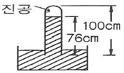
- 알코올
- 물
- 공기
- 수은
(정답률: 70%)
49. 다음에서 열전온도계 종류가 아닌 것은?
- 철과 콘스탄탄을 이용한 것
- 백금과 백금·로듐을 이용한 것
- 철과 알루미늄을 이용한 것
- 동과 콘스탄탄을 이용한 것
(정답률: 66%)
50. 다음 중 계통오차(Systematic error)가 아닌 것은?
- 계측기오차
- 환경오차
- 개인오차
- 우연오차
(정답률: 60%)
51. 유량계에 대한 설명으로 틀린 것은?
- 플로트형 면적유량계는 정밀측정이 어렵다.
- 플로트형 면적유량계는 고점도 유체에 사용하기 어렵다.
- 플로우 노즐식 교축유량계는 고압유체에 유량측정에 적합하다.
- 플로우 노즐식 교축유량계는 노즐의 교축을 완만하게 하여 압력손실을 줄인 것이다.
(정답률: 45%)
52. 다음 중 광고온계의 측정원리는?
- 열에 의한 금속팽창을 이용하여 측정
- 이종금속 접합점의 온도차에 따른 열기전력을 측정
- 피측정물의 전파장의 복사 에너지를 열전대로 측정
- 피측정물의 휘도와 전구의 휘도를 비교하여 측정
(정답률: 61%)
53. 전기저항 온도계의 특징에 대한 설명으로 틀린 것은?
- 자동기록이 가능하다.
- 원격측정이 용이하다.
- 1000℃ 이상의 고온측정에서 특히 정확하다.
- 온도가 상승함에 따라 금속의 전기 저항이 증가하는 현상을 이용한 것이다.
(정답률: 72%)
54. 다음 중 자동조작 장치로 쓰이지 않는 것은?
- 전자개폐기
- 안전밸브
- 전동밸브
- 댐퍼
(정답률: 68%)
55. 액주식 압력계에서 액주에 사용되는 액체의 구비조건으로 틀린 것은?
- 모세관 현상이 클 것
- 점도나 팽창계수가 작을 것
- 항상 액면을 수평으로 만들 것
- 증기에 의한 밀도 변화가 되도록 적을 것
(정답률: 65%)
56. 다음 중 물리적 가스분석계와 거리가 먼 것은?
- 가스 크로마토그래프법
- 자동오르자트법
- 세라믹식
- 적외선흡수식
(정답률: 50%)
57. 다음 중 탄성 압력계의 탄성체가 아닌 것은?
- 벨로스
- 다이어프램
- 리퀴드 벌브
- 부르동관
(정답률: 56%)
58. 초음파 유량계의 특징이 아닌 것은?
- 압력손실이 없다.
- 대 유량 측정용으로 적합하다.
- 비전도성 액체의 유량측정이 가능하다.
- 미소기전력을 증폭하는 증폭기가 필요하다.
(정답률: 43%)
59. 차압식 유량계에서 압력차가 처음보다 4배 커지고 관의 지름이 1/2로 되었다면 나중 유량(Q2)과 처음 유량(Q1)의 관계를 옳게 나타낸 것은?
- Q2 = 0.71 × Q1
- Q2 = 0.5 × Q1
- Q2 = 0.35 × Q1
- Q2 = 0.25 × Q1
(정답률: 52%)
60. 방사고온계로 물체의 온도를 측정하니 1000℃였다. 전방사율이 0.7이면 진온도는 약 몇 ℃ 인가?
- 1119
- 1196
- 1284
- 1392
(정답률: 30%)
4과목: 열설비재료 및 관계법규
61. 매끈한 원관 속을 흐르는 유체의 레이놀즈수가 1800일 때의 관마찰계수는?
- 0.013
- 0.015
- 0.036
- 0.⑤3
(정답률: 48%)
62. 사용압력이 비교적 낮은 증기, 물 등의 유체 수송관에 사용하며, 백관과 흑관으로 구분되는 강관은?
- SPP
- SPPH
- SPPY
- SPA
(정답률: 60%)
63. 축요(築窯)시 가장 중요한 것은 적합한 지반(地盤)을 고르는 것이다. 다음 중 지반의 적부시험으로 틀린 것은?
- 지내력시험
- 토질시험
- 팽창시험
- 지하탐사
(정답률: 60%)
64. 밸브의 몸통이 둥근 달갈형 밸브로서 유체의 압력 감소가 크므로 압력이 필요로 하지 않을 경우나 유량 조절용이나 차단용으로 적합한 밸브는?
- 글로브 밸브
- 체크 밸브
- 버터플라이 밸브
- 슬루스 밸브
(정답률: 68%)
65. 에너지이용 합리화법에 따라 산업통상자원부장관은 에너지사정 등의 변동으로 에너지수급에 중대한 차질이 발생할 우려가 있다고 인정되면 필요한 범위에서 에너지 사용자, 공급자 등에게 조정·명령 그 밖에 필요한 조치를 할 수 있다. 이에 해당되지 않는 항목은?
- 에너지의 개발
- 지역별·주요 수급자별 에너지 할당
- 에너지의 비축
- 에너지의 배급
(정답률: 65%)
66. 에너지이용 합리화법상 온수발생 용량이 0.5815 MW를 초과하며 10t/h 이하인 보일러에 대한 검사대상기기관리자의 자격으로 모두 고른 것은?
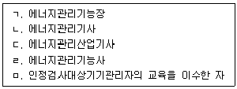
- ㄱ, ㄴ
- ㄱ, ㄴ, ㄷ
- ㄱ, ㄴ, ㄷ, ㄹ
- ㄱ, ㄴ, ㄷ, ㄹ, ㅁ
(정답률: 57%)
67. 다음 중 내화모르타르의 분류에 속하지 않는 것은?
- 열경성
- 화경성
- 기경성
- 수경성
(정답률: 47%)
68. 염기성 슬래그나 용융금속에 대한 내침식성이 크므로 염기성 제강로의 노재로 주로 사용되는 내화벽돌은?
- 마그네시아질
- 규석질
- 샤모트질
- 알루미나질
(정답률: 55%)
69. 에너지법에서 정한 용어의 정의에 대한 설명으로 틀린 것은?
- 에너지란 연료·열 및 전기를 말한다.
- 연료란 석유·가스·석탄, 그 밖에 열을 발생하는 열원을 말한다.
- 에너지사용자란 에너지를 전환하여 사용하는 자를 말한다.
- 에너지사용기자재란 열사용기자재나 그 밖에 에너지를 사용하는 기자재를 말한다.
(정답률: 66%)
70. 에너지이용 합리화법에서 정한 열사용 기자재의 적용범위로 옳은 것은?
- 전열면적이 20m2 이하인 소형 온수보일러
- 정격소비전력이 50kW 이하인 축열식 전기보일러
- 1종 압력용기로서 최고사용압력(MPa)과 부피(m3)를 곱한 수치가 0.01을 초과하는 것
- 2종 압력용기로서 최고사용압력이 0.2MPa를 초과하는 기체를 그 안에 보유하는 용기로서 내부 부피가 0.04m3 이상인 것
(정답률: 57%)
71. 에너지이용 합리화법에서 정한 에너지저장시설의 보유 또는 저장의무의 부과시 정당한 이유 없이 이를 거부하거나 이행하지 아니한 자에 대한 벌칙 기준은?
- 500만원 이하의 벌금
- 1천만원 이하의 벌금
- 1년 이하의 징역 또는 1천만원 이하의 벌금
- 2년 이하의 징역 또는 2천만원 이하의 벌금
(정답률: 43%)
72. 에너지이용 합리화법에 따라 검사대상기기 검사 중 개조검사의 적용 대상이 아닌 것은?
- 온수보일러를 증기보일러로 개조하는 경우
- 보일러 섹션의 증감에 의하여 용량을 변경하는 경우
- 동체·경판·관판·관모음 또는 스테이의 변경으로서 산업통상자원부장관이 정하여 고시하는 대수리의 경우
- 연료 또는 연소방법을 변경하는 경우
(정답률: 64%)
73. 에너지이용 합리화법상 특정열사용기자재 및 설치·시공범위에 해당하지 않는 품목은?
- 압력용기
- 태양열 집열기
- 태양광 발전장치
- 금속요로
(정답률: 55%)
74. 에너지이용 합리화법상 검사대상기기설차지가 해당기기의 검사를 받지 않고 사용하였을 경우 벌칙기준으로 옳은 것은?
- 2년 이하의 징역 또는 2천만원 이하의 벌금
- 1년 이하의 징역 또는 1천만원 이하의 벌금
- 2천만원 이하의 과태료
- 1천만원 이하의 과태료
(정답률: 57%)
75. 에너지이용 합리화법상 공공사업주관자는 에너지사용계획을 수립하여 산업통상자원부 장관에게 제출하여야 한다. 공공사업주관자가 설치하려는 시설 기준으로 옳은 것은?
- 연간 2500 TOE 이상의 연료 및 열을 사용, 또는 연간 2천만 kWh 이상의 전력을 사용
- 연간 2500 TOE 이상의 연료 및 열을 사용, 또는 연간 1천만 kWh 이상의 전력을 사용
- 연간 5000 TOE 이상의 연료 및 열을 사용, 또는 연간 2천만 kWh 이상의 전력을 사용
- 연간 5000 TOE 이상의 연료 및 열을 사용, 또는 연간 1천만 kWh 이상의 전력을 사용
(정답률: 50%)
76. 에너지법에서 정한 열사용기자재의 정의에 대한 내용이 아닌 것은?
- 연료를 사용하는 기기
- 열을 사용하는 기기
- 단열성 자재 및 축열식 전기기기
- 폐열 회수장치 및 전열장치
(정답률: 55%)
77. 공업용로에 있어서 폐열회수장치로 가장 적합한 것은?
- 댐퍼
- 백필터
- 바이패스 연도
- 레큐퍼레이터
(정답률: 62%)
78. 다음 중 산성 내화물에 속하는 벽돌은?
- 고알루미나질
- 크롬-마그네시아질
- 마그네시아질
- 샤모티질
(정답률: 50%)
79. 보온재의 열전도율에 대한 설명으로 옳은 것은?
- 배관 내 유체의 온도가 높을수록 열전도율은 감소한다.
- 재질 내 수분이 많을 경우 열전도율은 감소한다.
- 비중이 클수록 열전도율은 감소한다.
- 밀도가 작을수록 열전도율은 감소한다.
(정답률: 59%)
80. 다음 중 불연속식 요에 해당하지 않는 것은?
- 횡염식 요
- 승염식 요
- 터널 요
- 도염식 요
(정답률: 66%)
5과목: 열설비설계
81. 입형 횡관 보일러의 안전저수위로 가장 적당한 것은?
- 하부에서 75mm 지점
- 횡관 전길이의 1/3 높이
- 화격자 하부에서 100mm 지점
- 화실 천장판에서 상부 75mm 지점
(정답률: 52%)
82. 보일러 급수 중에 함유되어 있는 칼슘(Ca) 및 마그네슘(Mg)의 농도를 나타내는 척도는?
- 탁도
- 경도
- BOD
- pH
(정답률: 62%)
83. 보일러 운전 중 경판의 적절한 탄성을 유지하기 위한 완충폭을 무엇이라고 하는가?
- 아담슨 조인트
- 브레이징 스페이스
- 용접 간격
- 그루빙
(정답률: 62%)
84. 보일러 장치에 대한 설명으로 틀린 것은?
- 절탄기는 연료공급을 적당히 분배하여 완전연소를 위한 장치이다.
- 공기예열기는 연소가스의 예열로 공급공기를 가열시키는 장치이다.
- 과열기는 포화증기를 가열시키는 장치이다.
- 재열기는 원동기에서 팽창한 포화증기를 재가열시키는 장치이다.
(정답률: 56%)
85. 보일러수의 처리방법 중 탈기장치가 아닌 것은?
- 가압 탈기장치
- 가열 탈기장치
- 진공 탈기장치
- 막식 탈기장치
(정답률: 29%)
86. 보일러의 과열 방지 대책으로 가장 거리가 먼 것은?
- 보일러 수위를 낮게 유지할 것
- 고열부분에 스케일 슬러지 부착을 방지할 것
- 보일러 수를 농축하지 말 것
- 보일러 수의 순환을 좋게 할 것
(정답률: 67%)
87. 최고사용압력이 3.0MPa 초과 5.0MPa 이하인 수관보일러의 급수 수질기준에 해당하는 것은? (단, 25℃를 기준으로 한다.)
- pH : 7~9, 경도 : 0 mg CaCO3/L
- pH : 7~9, 경도 : 1 mg CaCO3/L 이하
- pH : 8~9.5, 경도 : 0 mg CaCO3/L
- pH : 8~9.5, 경도 : 1 mg CaCO3/L 이하
(정답률: 44%)
88. 다음 중 보일러 본체의 구조가 아닌 것은?
- 노통
- 노벽
- 수관
- 절탄기
(정답률: 63%)
89. 보일러 수압시험에서 시험수압은 규정된 압력의 몇 % 이상 초과하지 않도록 하여야 하는가?
- 3%
- 6%
- 9%
- 12%
(정답률: 53%)
90. 평형노통과 비교한 파형노통의 장점이 아닌 것은?
- 청소 및 검사가 용이하다.
- 고열에 의한 신축과 팽창이 용이하다.
- 전열면적이 크다.
- 외압에 대한 강도가 크다.
(정답률: 61%)
91. 내부로부터 155mm, 97mm, 224mm의 두께를 가지는 3층의 노벽이 있다. 이들의 열전도율(W/m·℃)은 각각 0.121, 0.069, 1.21이다. 내부의 온도 710℃, 외벽의 온도 23℃ 일 때, 1m2 당 열손실량(W/m2)은?
- 58
- 120
- 239
- 564
(정답률: 42%)
92. 다음 중 수관식 보일러의 장점이 아닌 것은?
- 드럼이 작아 구조상 고온 고압의 대용량에 적합하다.
- 연소실 설계가 자유롭고 연료의 선택범위가 넓다.
- 보일러수의 순환이 좋고 전열면 증발율이 크다.
- 보유수량이 많아 부하변동에 대하여 압력변동이 적다.
(정답률: 46%)
93. 다음 중 보일러의 탈산소제로 사용되지 않는 것은?
- 탄닌
- 하이드라진
- 수산화나트륨
- 아황산나트륨
(정답률: 48%)
94. 외경과 내경이 각각 6cm, 4cm이고 길이가 2m인 강관이 두께 2cm인 단열재로 둘러 쌓여있다. 이때 관으로부터 주위공기로의 열손실이 400W라 하면 관 내벽과 단열재 외면의 온도차는? (단, 주어진 강관과 단열재의 열전도율은 각각 15W/m·℃, 0.2 W/m·℃이다.)
- 53.5℃
- 82.2℃
- 120.6℃
- 155.6℃
(정답률: 38%)
95. 보일러의 과열에 의한 압궤의 발생부분이 아닌 것은?
- 노통 상부
- 화실 천장
- 연관
- 가셋스테이
(정답률: 70%)
96. 보일러의 성능시험방법 및 기준에 대한 설명으로 옳은 것은?
- 증기건도의 기준은 강철제 또는 주철제로 나누어 정해져 있다.
- 측정은 매 1시간마다 실시한다.
- 수위는 최초 측정치에 비해서 최종 측정치가 적어야 한다.
- 측정기록 및 계산양식은 제조사에서 정해진 것을 사용한다.
(정답률: 59%)
97. 보일러 설치·시공기준상 보일러를 옥내에 설치하는 경우에 대한 설명으로 틀린 것은?
- 불연선 물질의 격벽으로 구분된 장소에 설치한다.
- 보일러 동체 최상부로부터 천장, 배관 등 보일러 상부에 있는 구조물까지의 거리는 0.3m 이상으로 한다.
- 연도의 외측으로부터 0.3m 이내에 있는 가연성 물체에 대하여는 금속 이외의 불연성 재료로 피복한다.
- 연료를 저장할 때에는 소형보일러의 경우 보일러 외측으로부터 1m 이상 거리를 두거나 반격벽으로 할 수 있다.
(정답률: 58%)
98. 보일러에 설치된 기수분리기에 대한 설명으로 틀린 것은?
- 발생된 증기 중에서 수분을 제거하고 건포화증기에 가까운 증기를 사용하기 위한 장치이다.
- 증기부의 체적이나 높이가 작고 수면의 면적이 증발량에 비해 작은 때는 가수공발이 일어날 수 있다.
- 압력이 비교적 낮을 보일러의 경우는 압력이 높은 보일러 보다 증기와 물이 비중량 차이가 극히 작아 기수분리가 어렵다.
- 사용원리는 원심력을 이용한 것, 스크러버를 지나게 하는 것, 스크린을 사용하는 것 또는 이들의 조합을 이루는 것 등이 있다.
(정답률: 58%)
99. 안지름이 30mm, 두께가 2.5mm인 절탄기용 주철관의 최소 분출압력(MPa)은? (단, 재료의 허용인장응력은 80 MPa 이고, 핀붙이를 하였다.)
- 0.92
- 1.14
- 1.31
- 2.61
(정답률: 13%)
100. 외경 30mm의 철관의 두께 15mm의 보온재를 감은 증기관이 있다. 관 표면의 온도가 100℃, 보온재의 표면온도가 20℃인 경우 관의 길이 15m인 관의 표면으로부터의 열손실(W)은? (단, 보온재의 열전도율은 0.06 W/m·℃ 이다.)
- 312
- 464
- 542
- 653
(정답률: 19%)